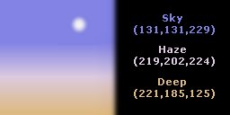

Во многих играх важной составляющей графики и геймплея является плавная смена дня и ночи (например, в RPG и играх в стиле GTA). В Xtreme3D такую функциональность обеспечивает объект Skydome, что в дословном переводе означает "небесный купол", "небосвод". Это сферическая форма, окружающая сцену и меняющая цвет в зависимости от времени суток. На куполе в буквальном смысле "подвешены" солнце и звезды. Солнце плавно ходит по небу: когда оно опускается к горизонту, мы наблюдаем закат. А потом небо темнеет и наступает ночь. Звезды мерцают, как настоящие. Единственный минус - нет облаков. Их придется делать самостоятельно. Это, вероятно, было допущено для того, чтобы не лишать разработчика возможности сделать, например, авиасимулятор: чтобы можно было как опуститься до самой земли, так и подняться к облакам и видеть их с близкого расстояния.
Цвет неба в skydome составлен из трех компонентов: Deep, Haze, Night и Sky.
Deep - цвет так называемого надира - точки, противоположной зениту; она расположена у нас под ногами. Обычно в реальной жизни надир увидеть невозможно, земля мешает :) Но цвет этой точки важен, так как он определяет, с каким оттенком смешивается цвет неба по мере ухода за линию горизонта.
Haze - цвет линии горизонта. Обычно соответствует цвету тумана.
Sky - цвет зенита. В этот цвет окрашен весь небесный купол до линии горизонта.
Night - цвет ночи. Когда солнце уходит за горизонт, этим цветом постепенно заполняются все компоненты неба, кроме Deep. Чаще всего это черный или темно-синий, хотя могут быть и другие варианты.

Ниже приведен код, который создает небо:
sky = SkydomeCreate(24, 48, global.back);
SkydomeSetOptions(sky, true, true);
ObjectRotate(sky, 90, 0, 0);
SkydomeSetNightColor(sky, make_color_rgb(0, 0, 180));
angle = 0;
SkydomeSetSunElevation(sky, angle);
SkydomeAddRandomStars(sky, 50, c_white);
Чтобы солнце двигалось по небу, нужно каждый шаг времени менять угол, на котором оно находится по отношению к горизонту. Угол в 90 градусов соответствует зениту, -90 - надиру.
SkydomeSetSunElevation(sky, angle);
angle = angle + 1.0 * dt;
Можно также создать реалистичное звездное небо с привычными нам созвездиями, хотя это не так просто, как может показаться. Для этого вам нужно понимать астрономические координаты. В Xtreme3D положение звезды на небе задается во второй экваториальной системе координат, которая включает две величины - прямое восхождение (right ascension) и склонение (declination). При этом обе величины задаются в градусах, хотя в астрономии прямое восхождение традиционно измеряется в часах, минутах и секундах (1 угловой час равен 360 / 24 = 15 градусам). Чтобы упростить перевод этих единиц в градусы, в Xtreme3D SDK есть скрипт RightAscension(hours, minutes, seconds). Также имеется скрипт Declination(degrees, minutes, seconds), при помощи которого можно получить единое вещественное значение из градусов, угловых минут и угловых секунд.
Вот пример создания всем известного Ковша - семи главных звезд Большой Медведицы (координаты из Википедии):
SkydomeAddStar(sky, RightAscension(11, 3, 44), Declination(61, 45, 0), 1.79, c_white); // Дубхе
SkydomeAddStar(sky, RightAscension(11, 1, 50), Declination(56, 22, 57), 2.37, c_white); // Мерак
SkydomeAddStar(sky, RightAscension(11, 53, 50), Declination(53, 41, 41), 2.44, c_white); // Фекда
SkydomeAddStar(sky, RightAscension(12, 15, 25), Declination(57, 01, 57), 3.31, c_white); // Мегрец
SkydomeAddStar(sky, RightAscension(12, 54, 0), Declination(55, 57, 35), 1.77, c_white); // Алиот
SkydomeAddStar(sky, RightAscension(13, 23, 55), Declination(54, 55, 31), 2.27, c_white); // Мицар
SkydomeAddStar(sky, RightAscension(13, 47, 32), Declination(49, 18, 48), 1.86, c_white); // Алькаид
Удобнее будет, конечно, создать что-то вроде звездного каталога в файле и читать его при загрузке, создавая звезды процедурно.